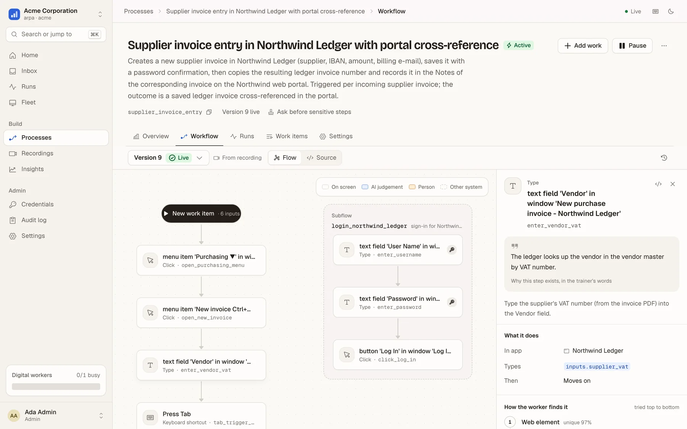
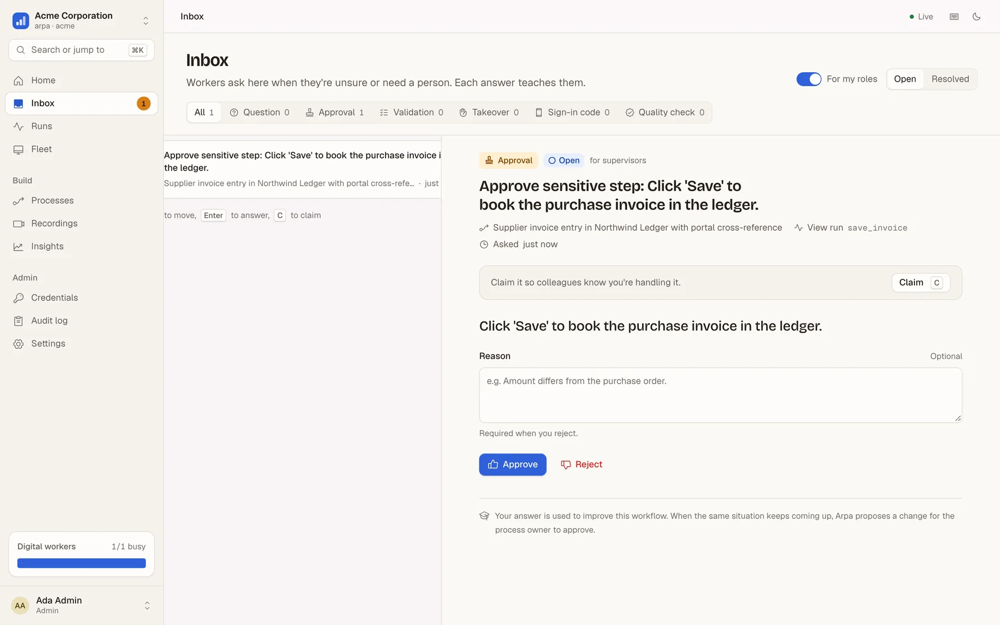
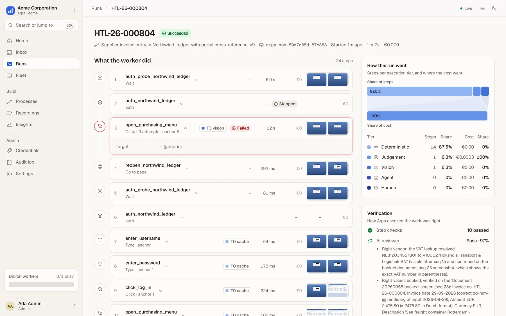
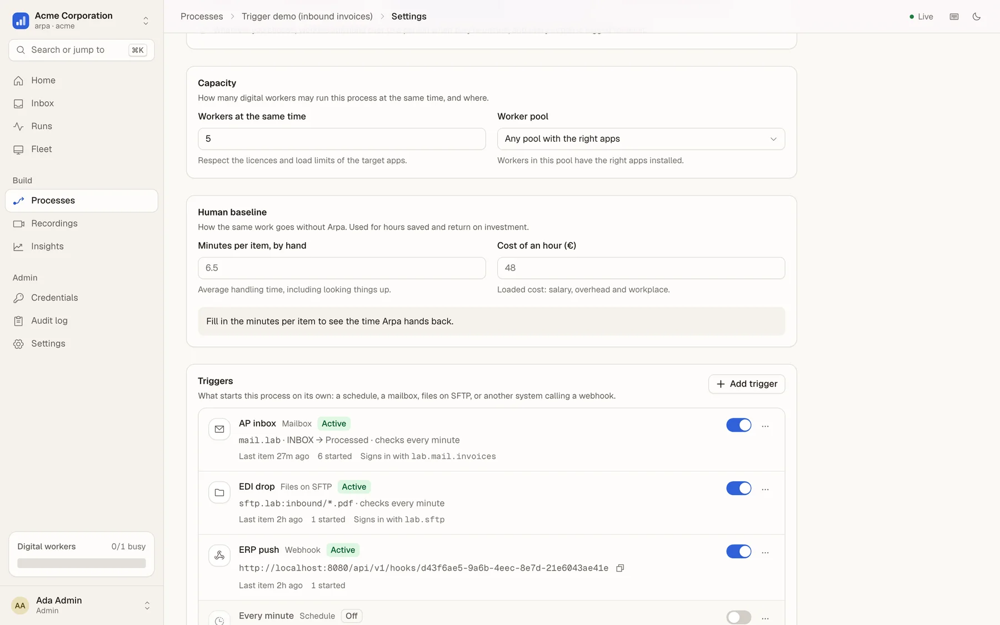
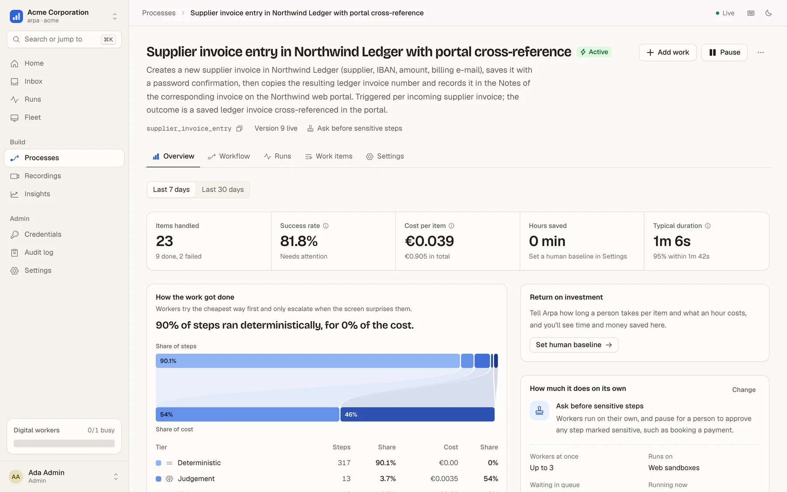

Private preview Agentic RPA for any process done on a screen
Show it once. Arpa runs it.
A colleague does the process once, explaining as they go. Arpa compiles the recording into a reliable workflow and runs it on a fleet of computer-use agents, inside the apps you already have. No APIs, no integration project, people in the loop.
items passed across three legacy-app scenarios, checked against each app's own data
<2¢
model cost per item (€0.004 to €0.017 measured), including the AI reviewer that checks the work
~90%
of steps replay deterministically, in milliseconds, without calling a model
0
passwords or one-time codes ever shown to a model. Secrets are typed by the worker and masked in every frame
Measured on our Legacy Lab: deliberately awkward web apps with pop-ups, expiring sessions, iframes, 2FA and SSO.
Built for the software nobody wants to integrate with
Legacy web ERPsBank portals with 2FAIntranets behind SSOMailboxes and PDFsWindows thick clients PREVIEWJava desktop apps PREVIEW
How it works
From one demonstration to a fleet that does the work.
Traditional RPA needs developers to script every click. Pure AI agents improvise every click, slowly and expensively. Arpa learns the process once from the people who know it, then runs it the cheap way, with AI only where it adds something.
1Record
Do it once, out loud
The desktop recorder captures the screen, every click and keystroke, the app's accessibility tree and the narration. Passwords and personal data are blurred on the device, before anything is uploaded.
macOS today · Windows in preview
2Compile
A workflow, not a video
Arpa infers the inputs, the decisions and the checks. Steps that never change become deterministic, judgement calls follow your policy documents, and sensitive steps wait for approval. No hand edits are needed.
recording → published process in minutes
3Run
A fleet that asks when unsure
Sandboxed workers run the queue in parallel. Each step tries the cheapest way first and escalates only when the screen surprises it, up to a person who can answer or take over the screen.
web today · Windows desktop in preview
Compiled, not scripted
Every step knows how to find its element and how to check it worked.
Each step carries a ladder of ways to locate its target: stable ids, labels, nearby text, a picture of the element, a description for the agent. After it acts, it checks the result: the right window, the right value, the right record.
Inputs, formats and policies inferred from the narration and your documents
Login, MFA, expired sessions and pop-ups handled by the platform
Readable by the business: the narration stays attached as each step's rationale

A process compiled from one recording, zero hand edits
Why it's cheap and why it doesn't break
Deterministic first. AI when it matters.
Scripted bots break when a button moves. Agents that think about every click cost cents per click and still guess. Arpa replays what it knows in milliseconds and escalates one rung at a time. Every rescue becomes a proposed fix, so the workflow gets cheaper the more it runs.
T0
Remembered
The exact element that worked last time on this screen.
~ 0 · ms
T1
Exact anchor
Stable ids, accessibility names, test ids, labels.
~ 0 · ms
T2
Fuzzy match
Renamed ids and moved labels, scored for uniqueness.
~ 0 · ms
T3
Vision
A small vision model points at the element on the screenshot.
~ €0.001
T4
Agent
A bounded computer-use agent recovers the step, within a budget.
cents
T5
A person
Answers a question or takes over the screen. The answer teaches the workflow.
your call
How 228 steps of HR onboarding were resolved, through SSO on a SharePoint-style intranet
Remembered 65%Exact 25%7%
RememberedExact anchorNavigation and waitsApprovals by a personVision and agent: 0
€0.0106 per new hire, all model calls included, and the per-step cost keeps falling as successful recoveries are folded back into the workflow.
People in the loop
Autonomy you set per process, not a black box.
Start in practice mode, where workers do everything except the final save. Move to "ask before sensitive steps". Go fully autonomous when the numbers say so. Whatever you choose, an unsure worker asks instead of guessing.
Approvals for sensitive steps, such as booking, paying or submitting
Questions come with the worker's own best guess and a screenshot
Live takeover: your mouse and keyboard drive the worker's screen, then hand it back
Every answer is recorded, and recurring ones become proposed workflow changes

The inbox: a worker waits for approval before booking
Every run on the record
See exactly what the worker did, and why it is right.
Each run keeps a screenshot per step, how each element was found, what it cost, and an AI reviewer's findings, which compare the work item with what actually landed in the system. Postconditions catch mistakes as they happen.
An append-only audit log of every action by people, workers and the platform
An independent AI review, sampled per process, plus reconciliation with the system of record
Expired sessions, pop-ups and lost machines recover on their own

A run that recovered from an expired session on its own
Starts on its own
Work arrives the way it already does.
Point Arpa at the AP mailbox and every e-mailed invoice becomes a work item, with its attachments stored as documents. Watch an SFTP folder, run on a schedule, take a signed webhook from your ERP, or upload a spreadsheet.
Mailbox (IMAP), SFTP, schedules, signed webhooks, API and CSV/Excel
Deduplicated by message id, file or idempotency key, so nothing is booked twice
Documents flow into the run, extracted or attached to the right form field

Mailbox, SFTP, webhook and schedule triggers
Know what it costs
Cost per item, not a licence per bot.
Every model call goes through one metered gateway. You see the cost per item and per process, which tier did the work, and the time handed back against a human baseline.
Hard budgets per run for agent time and spend
Cheap open models by default, your own model keys if you prefer
Hours saved and return on spend, per process

90% of steps ran deterministically, for 0% of the cost
Proof, not promises
Measured end to end on real legacy apps.
Every scenario runs on the platform as it ships: queue, fleet, approvals, review. The result is then reconciled against the target app's own database.
Finance · AP
15/15passed
Supplier invoices in a legacy ERP
Expiring passwords, vendor lookups, GL coding from the AP policy, approvals above €10k, duplicates skipped.
per item
€0.0043
p50
12 s
Treasury
10/10passed
SEPA payments with 2FA
Authenticator codes coordinated across parallel workers, a cross-site signing widget, invalid payments sent to a person.
per item
€0.017
2FA
one code per window
HR
8/8passed
Onboarding through SSO
Keycloak sign-in, a five-step wizard, a people picker, an ID document uploaded byte for byte, rejections routed to HR.
per item
€0.0106
vision or agent
0 steps
From a recording
3/3booked
Compiled from one demonstration
A narrated demo became a 15-step process with no hand edits. The fleet booked real invoices; an agent cleared a surprise dialog and proposed the fix.
compile
€0.10–0.16
hand edits
0
Legacy Lab apps are built to fight automation: random password-expiry prompts, ASP.NET ids that change on every load, cross-origin iframes, idle timeouts, duplicate-detection dialogs. Every number here comes from a recorded run report.
Trust by design
Built for European companies and their works councils.
GDPR and the EU AI Act shaped the architecture from the first line, not a compliance layer added later.
Models never see secrets
Credentials live in a vault and are sealed to one worker session. They are typed at keystroke level only into fields found by structure, and masked in every frame, log and recording.
On your servers
The whole platform runs on Docker Compose on your own hardware: the same code as the hosted service, with your network, your vault and your model keys. Air-gapped mode is on the roadmap.
Everything on the record
An append-only audit log, a screenshot per step, the model routing behind every decision, and human oversight on every sensitive step, ready for AI Act logging and oversight duties.
Works-council mode
Recording is started by the employee, with a visible indicator. Recorders are pseudonymised, recordings never feed per-employee analytics, and redaction happens on the device.
Isolation in the database
Every tenant's rows are fenced off by Postgres row-level security, not by application code alone. Roles cover admins, process owners, supervisors, reviewers and auditors.
Your models, or ours
One model gateway meters every call and enforces budgets. Use the open models we provide, or bring your own keys for Anthropic, OpenAI or any compatible provider.
Available in private preview
On-premises
One make up and you have the console, the fleet, the vault, single sign-on and the model gateway. Workers connect outbound only, so no inbound firewall holes are needed.
On the way
Hosted in the EU
The same platform, hosted and operated by us in European data centres, with sandboxed Windows and web workers on demand and EU-resident models.
Stop scripting. Start showing.
Arpa is in private preview with a small number of European teams. Bring us the process everyone dreads, and we'll show you a worker doing it.